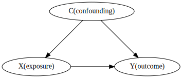

通常の多変量解析による因果推論

上記のモデルを考える。
ここで、YとXの関係の真のモデルは、Cがすべて既知であれば
$$
Y = \alpha + \beta X + \gamma C + \epsilon
$$
ここで、εは誤差、α、β、γは回帰係数。βがYに対するXの影響を示す求めたい回帰係数となる。
しかし交絡Cが入手できない状況では、Cを除いた単純な回帰を行うとバイアスがかかってしまう
$$
Y = \alpha_u + \beta_u X + \epsilon
$$
この単回帰の係数\(\beta_u\)は公式から
$$
\beta_u = \frac{Cov(X,Y)}{Var(X)}
$$
となるが、このYに真のモデルを代入すると
\begin{eqnarray*}
\beta_u &=& \frac{Cov(X,Y)}{Var(X)} \\
&=& \frac{Cov(X, \alpha + \beta X + \gamma C + \epsilon)}{Var(X)} \\
&=& \frac{Cov(X,\beta X) + Cov(\alpha + \gamma C + \epsilon)}{Var(X)} \\
&=& \beta + \gamma \frac{Cov(C,X)}{Var(X)}
\end{eqnarray*}
つまり、単回帰係数で得られた\(\beta_u\)は真の値βから$\gamma \frac{Cov(C,X)}{Var(X)} $だけずれてしまう。
これは、すべての交絡を調節しなければ真の因果関係は推定できないことを意味している。
RCTなどの実験では、Xへの割り付けをランダムに行うことで、XとCの関係を断ち切る方法である。つまり、上の式でCov(C,X)=0となるため、単回帰によるβと真のβが一致する。
操作変数法

操作変数法はある変数Zを用いて、測定不可能な交絡因子があっても正しく因果推論ができる方法である。
- ZとXに強い相関がある。（ZによりXが決まる）
- ZはXを介してのみ、Yへ影響を与える
天下り的だが、操作変数Zを用いると、二段階最小二乗法とよばれる方法で正しいβを推定できる
- \(X = \eta + \delta Z + \epsilon\) の回帰を用いて、ηとδを推定する
- 1.で推定されたXをつかって、\(Y = \alpha_i + \beta_i X + \epsilon\) の回帰を行う
- すると、\(\beta_i\)は真のβと一致する。
簡単な説明
第一段階の回帰で
$$
\delta = \frac{Cov(Z,X)}{Var(Z)}
$$
第二段階の回帰式に、\(X = \eta + \delta Z\)を代入する
\begin{eqnarray*}
Y &=& \alpha_i + \beta_i X + \epsilon \\
&=& \alpha_i + \beta_i (\eta + \delta Z) + \epsilon \\
&=& \alpha_i + \beta_i \eta + \beta_i\delta Z + \epsilon' \\
\end{eqnarray*}
ここで公式から
\begin{eqnarray*}
\beta_i\delta &=& \frac{Cov(Z,Y)}{Var(Z)} \\
\Leftrightarrow \beta_i &=& \frac{Cov(Z,Y)}{Cov(Z,X)}
\end{eqnarray*}
ここで、βとβiの関係を知るため、Yに真のモデル\(Y = \alpha + \beta X + \gamma C + \epsilon\)を代入すると
\begin{eqnarray*}
\beta_i &=& \frac{Cov(Z,Y)}{Cov(Z,X)} \\
&=& \frac{ Cov(Z, \alpha + \beta X + \gamma C + \epsilon) }{Cov(Z,X)}\\
&=& \frac{ Cov(Z, \beta X) }{Cov(Z,X)}\\
&=& \beta
\end{eqnarray*}
ここで、ZとCが独立であること(Cov(Z,C)=0)を使った。
二段階回帰の意味について
直感的な理解は難しいが、このように理解する
1. Zを動かすことで、Xを操作することが可能
2. Zと交絡Cは相関がないという仮定なので、Zを動かすことによる交絡の影響は平均的に無視できる
3. そのため、「Zに起因するXの値の変化」と「Y」の関係を調べることで、間接的にXがYに与える影響を調べることができる。
重回帰
上の方法は、二段階最小二乗法とよばれる方法で、X,Yの関係に他に測定可能な交絡因子がある場合でも同様に使用できる。
この場合, 測定可能な交絡をC、測定不可能な交絡をUとして
$$
X = \eta + \delta Z + \zeta C + \epsilon' \\
Y = \alpha + \beta X + \xi C + \epsilon
$$
の二段階の回帰で同様にβを計算できる。
公式集
期待値
$$
E(X) = \frac{1}{n}\Sigma^n_{i=1} X_i
$$
分散
\begin{eqnarray*}
Var(X) &=& \frac{1}{n}\Sigma^{n}_{i=1}(X_i-E(X))^2 \\
&=& E(X^2)-E(X)^2
\end{eqnarray*}
共分散
\begin{eqnarray*}
Cov(X,Y) &=& \frac{1}{n}\Sigma^{n}_{i=1} (X-E(X))(Y-E(Y)) \\
&=& E[(X-E(X))(Y-E(Y) ] \\
&=& E(XY) - E(X)E(Y)
\end{eqnarray*}
他
$$
E(a+bX) = a + b E(X)
$$
$$
V(a+bX) = b^2V(X) \\
V(X + Y) = V(X) + V(Y) + 2Cov(X,Y)
$$
$$
Cov(a+bX, Y) = b Cov(X,Y)
$$
単変量回帰（最小二乗法）について
$$ Y = \alpha + \beta X $$
の回帰係数は
$$
\alpha = E(Y) - \beta E(X)
$$
$$
\beta = \frac{Cov(X,Y)}{Var(X)}
$$
重回帰分析の最小二乗法の推定値は
$$ \mathbf{\beta} = (\mathbf{X}^T\mathbf{X})^{-1}\mathbf{X}^T \mathbf{Y} $$
参考
Comments
comments powered by Disqus